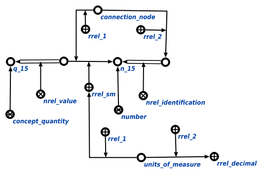

Задачей scp-программы генерации цепочки значения или идентификации является генерация цепочки значения для величины и генерация цепочки идентификации для числа. Первым входным параметром является узел величины или числа, для которого необходимо достроить соответствующую цепочку значения или идентификации. Вторым входным параметром является множество, в котором под атрибутом 1' находится размерность одной из известных величин, если таковые имеются в связке математического отношения, а под атрибутом 2' разрядность одного из известных чисел. Третьим входным параметром является множество, в которое под атрибутом 1' будет занесена сгенерированная дуга цепочки значения, уточняемая атрибутом размерности, а под атрибутом 2' - связка, содержащая все возможные идентификации c необходимыми уточняющими атрибутами. В ходе выполнения программы явно указывается связь со следующими ключевыми узлами: абсолютным понятием величина и число, отношениями идентификация* и значение*, характеризующими цепочки значения и идентификации, порядковыми атрибутами 1' и 2', уточняющих элементы формируемого множества. Ниже представлены результаты выполнения процедуры:
